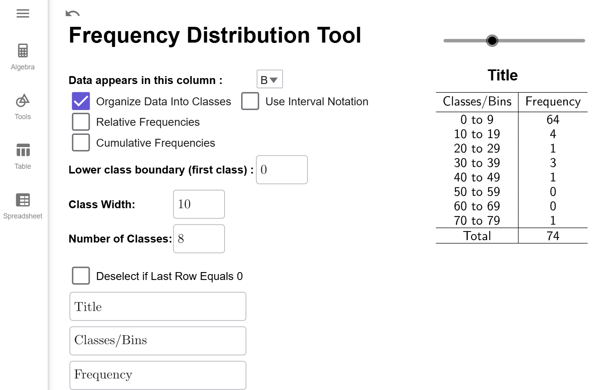
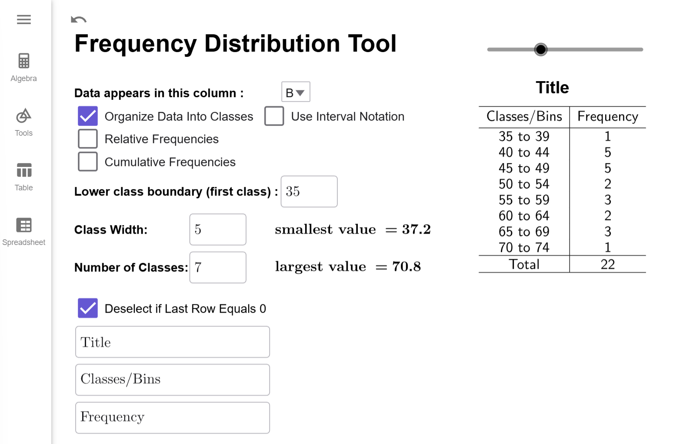
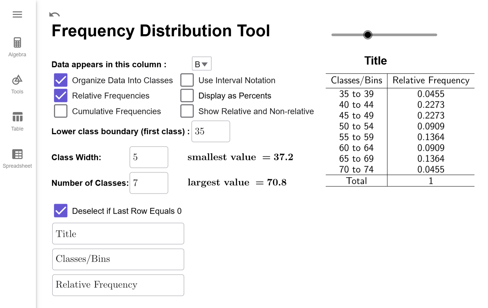
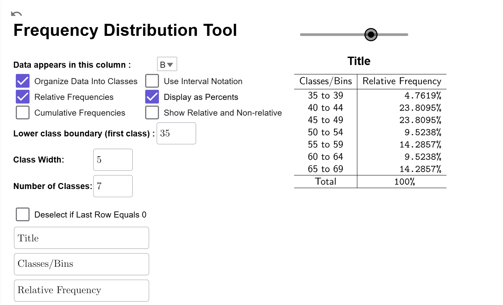
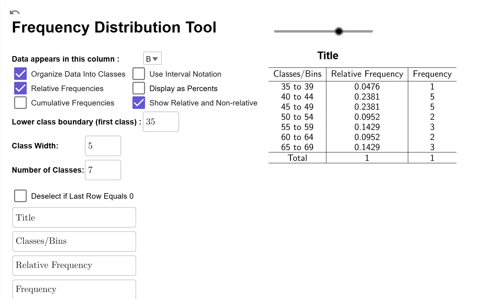
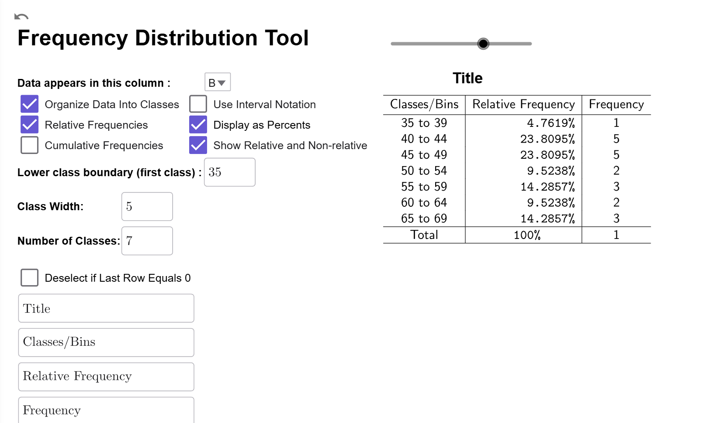

Creating Relative Frequency Distributions
An important concept related to frequency is relative frequency, and it is a foundational concept for several key topics in this course. We will use relative frequencies when discussing cumulative frequencies (discussed below), creating histograms, studying probability and probability distributions, and using statistical inference to discuss population proportions. By connecting data analysis to probability theory and statistical inference, relative frequency serves as a bridge between descriptive and inferential methods in a statistics course.
Relative Frequency Distributions
What is Relative Frequency?
Relative Frequency has two interpretations.
- For raw data, relative frequency is the percentage of times that a particular value appears in a data set.
- For data sorted into classes, relative frequency is the percentage of data that appear in a given class.
In both cases, the formula for relative frequency is identical: \[\text{relative frequency}=\dfrac{\text{{frequency}}}{{n}},\] where \(n\) is the number of data points in the sample.
Notice that this will always give a percentage as a decimal, so we will always write \(0.3947\) instead of \(39.47\)% in this course. Using percentages instead of decimals can cause errors in many of the formulas because most statistical formulas use relative frequencies rather than percentages to ensure accurate calculations.
⚠️ Warning ⚠️
Relative frequencies will always yield a number between 0 and 1. If you get a number larger than 1 or a negative number, double check your work because you made a calculation error!
What is a Relative Frequency Distribution?
A relative frequency distribution is a table that lists either the raw data or classes in the first column and the corresponding relative frequencies in the second column.
How Do I Compute a Relative Frequency?
Let's consider our Frequency Distribution from Example 4 in How to Create Frequency Distributions:

To determine the number of data points, we first choose a class,
such
as the interval 0 to 9, and note its frequency, which is 64. The relative frequency is
found
by dividing the class frequency by the total number of year, 74, as follows:
\[\dfrac{{64}}{{74}}\approx 0.8649.\] Thus, \(0.8649\) is the relative frequency for 0
to
10, meaning \(86.49\%\) of the years from 1950 to 2023 had 0 to 10 deaths (excluding
10). Note we will always round relative frequency to four decimal places, which is
a
standard practice in statistics.
While it is essential to know how to compute a relative frequency, performing multiple manual calculations to create a relative frequency distribution increases the risk of calculation errors. In our next example, we will see how to use our Frequency Distribution Tool to create a relative frequency distribution.
Example
According to National Institutes of Health Cancer Statistics, the rate at
which men
get Colon-Rectal cancer each year (per 100,000 men, rounded to one decimal place) from
2000 to
2021 is given in the table below. Find the relative frequency distribution for
this data
if we use a lower class boundary of 35 and a class width of 5.
| Year | Rate | Year | Rate |
|---|---|---|---|
| 2000 | 70.8 | 2011 | 49.5 |
| 2001 | 69.6 | 2012 | 48.0 |
| 2002 | 68.3 | 2013 | 46.9 |
| 2003 | 66.3 | 2014 | 46.7 |
| 2004 | 64.0 | 2015 | 45.5 |
| 2005 | 61.9 | 2016 | 44.5 |
| 2006 | 59.1 | 2017 | 43.5 |
| 2007 | 58.1 | 2018 | 42.9 |
| 2008 | 56.2 | 2019 | 42.7 |
| 2009 | 53.1 | 2020 | 37.2 |
| 2010 | 51.0 | 2021 | 40.8 |
Solution
Load your data into GeoGeobra (see of How to Create Frequency Distributions if you need a refresher). Make sure to select column B since the rates are in that column. Since our data is in decimals, this is a good time to choose our lower boundary manually, which is why I gave it to you in the problem. Enter 35 for the lower class boundary and 5 for the class width. Also, make sure the Deselect if Last Row Equals 0 checkbox is checked since our classes only go from 35 up to 70 and our larges data point is 70.8. If you have everything set correctly, your Frequency Distribution Tool should look like this.

Now that we have this set up correctly, all we have to do is check the Relative Frequencies checkbox to convert all the frequencies to relative frequencies. The Frequency Distribution Tool will automatically update the table.

Interpretation
The class bin 45–49 has a relative frequency of 0.2773, meaning 27.73% of the years from 2000 to 2021 had 45–49 men per 100,000 diagnosed with Colon-Rectal Cancer.
$$\tag*{\(\blacksquare\)}$$
There are two important options for Relative Frequency Distributions you should be aware of.
Relative Frequency Distribution Options
Convert To Percentage
If you click on the Display as Percentages Checkbox, it will convert the relative frequencies to percentages.
 with percentages instead of relative frequencies." title="The relative frequency distribution from with percentages instead of relative frequencies." width="500" height="303">
Compare Frequency to Relative Frequency
If you click on the Show Relative and Non-Relative Checkbox, a third column will be added showing the original frequencies so you can have the frequency and relative frequency data side-by-side.

Both Options
You can also select both options at once to compare percentages to frequencies.

Even though the computer does most of the heavy lifting for us, it is still important to know how to perform the calculations by hand to make sure there are no errors in the data or output.
Example
Consider the following frequency distribution for average August temperatures in Nashville, TN. (Source: Weather UnderGround) Find the relative frequency for the class 86 to 88.
| Degrees Fahrenheit | Number of Years |
|---|---|
| 80 to 82 | 2 |
| 83 to 85 | 14 |
| 86 to 88 | 33 |
| 89 to 91 | 22 |
| 92 to 94 | 5 |
| 95 to 97 | 1 |
| Total | 77 |
Solution
Since 33 of the 77 years had an average temperature of \(86^\circ\)F to \(88^\circ\)F, the relative frequency is \[\dfrac{{33}}{{77}}\approx 0.4286\]
Interpretation
In Nashville, TN, 42.86% of the years between 1948 and 2024 experienced an average August temperature ranging from \(86^\circ\)F up to but not including \(89^\circ\)F.
$$\tag*{\(\blacksquare\)}$$